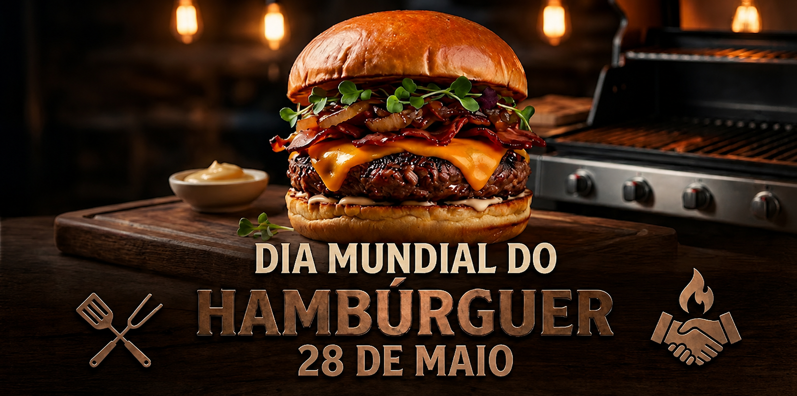

Informações rápidas sobre o evento e as reservas.
O evento começa às 12h e segue durante toda a tarde com atrações e experiências gastronômicas.
Sim, os participantes terão acesso gratuito ao estacionamento durante o período do evento.
Sim, teremos apresentações ao vivo ao longo do dia para tornar a experiência ainda mais especial.
Sim, o cancelamento pode ser solicitado com antecedência entrando em contato pelos nossos canais de atendimento.